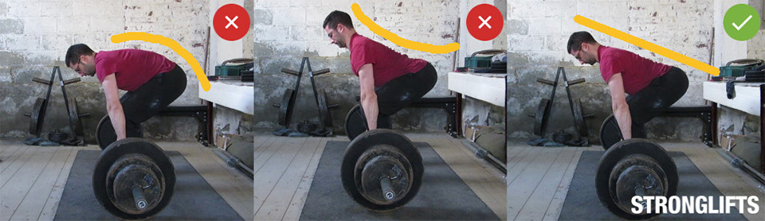

Gym sports.com
The barbell deadlift is the most important of the five basic exercises. The benefit of deadlifting is that it develops both large and small muscles of the body. In addition (when working with heavy weights), testosterone levels increase and the central nervous system is strengthened. The deadlift technique involves lifting a barbell from the floor using the strength of the muscles of the buttocks, back of the legs, core and upper back. Despite its apparent simplicity, there are many nuances of the technique that are most often ignored by beginners.
TThere is simply no better exercise for developing strength and stimulating lat growth. This is why pull-ups are a must for any back workout. The strength of the muscles involved in performing pull-ups is extremely important when performing any movement that involves pulling the body towards fixed arms. By regularly performing pull-ups, you will improve your skills in rock climbing, gymnastics (exercises on the horizontal bar, rings, parallel bars), and swimming (especially butterfly and crawl). Technique: Pull-ups on the bar Jump up and grab the bar with a wide grip. The distance between the palms is 20-25 cm wider than the shoulders. Hang from the bar. To fully stretch your lats, imagine that your palms are nothing more than hooks from which your entire body hangs: your arms are completely straight and relaxed, with only your forearms tense to provide a firm grip. This is the lowest point of the exercise. Take a deep breath and, holding your breath, tighten your lats and pull yourself up. During pull-ups, your elbows should always remain in the same place, do not pull them towards the sides of your body. Pull yourself up until your chin is level with the bar or just above it. This is the top point. Exhale and smoothly lower down to the starting position.

We stand in front of the barbell. We grab it with a wide grip (wider than the shoulders) and remove it from the racks. The grip is straight (fingers towards you, fists outwards). The brush does not bend, but stays straight. Elbows are placed to the sides. There is a natural arch in the lower back, the back is straight, the legs are slightly bent at the knees. We tilt our torso forward, trying to achieve a position close to parallel with the floor. Balance is maintained due to the fact that while bending, you bend your knees, moving your pelvis back. We fix the body in this position. Now we pull the barbell towards the stomach (towards the lower part), bringing the shoulder blades together as much as possible. The bar row is carried out by the muscles of the back, not the arms. Hold at the top point for 1 second and smoothly lower the projectile back, spreading your shoulder blades to the sides. We try not to change the position of the back. We simply lower our arms as far down as possible by spreading our shoulder blades.